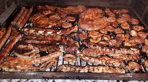
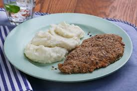
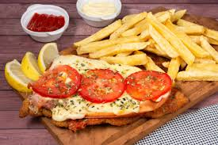

El asado comida que se suele comer todos los Domingos, en su mayoria compuesto de carne vacuna aunque tambien puede ser de chancho, cordero o en regiones del norte Argentino carne de llama.
la parrila se calienta a base de brazas.Se prepara la carne con condimentos a gusto siendo lo mas comun sal y limon, se pone la carne en la parrilla y a esperar la coccion.

La Milanesa es una feta ya sea de Lomo o paleta, tambien puede ser de pollo, pescado o berenjena, a la cual se la sumerge en una mezcla de huevo,perejil,sal y ajo. Luego se la empaniza para posterior fritarla u hornearla.

La Napolitana es una Milanesa a la cual se le agrego salsa de tomate, queso, jamon, huevo frito, tomate y se lo suele acompañar con papas fritas.
